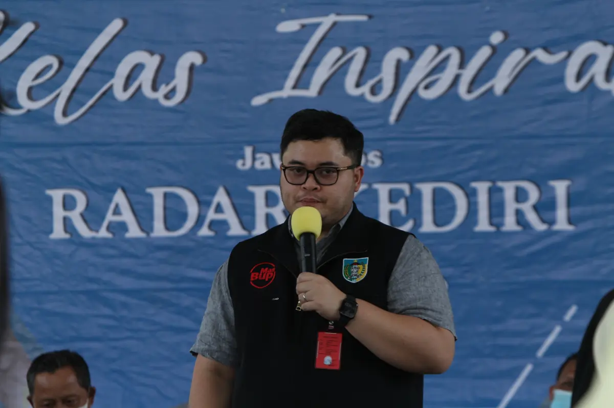
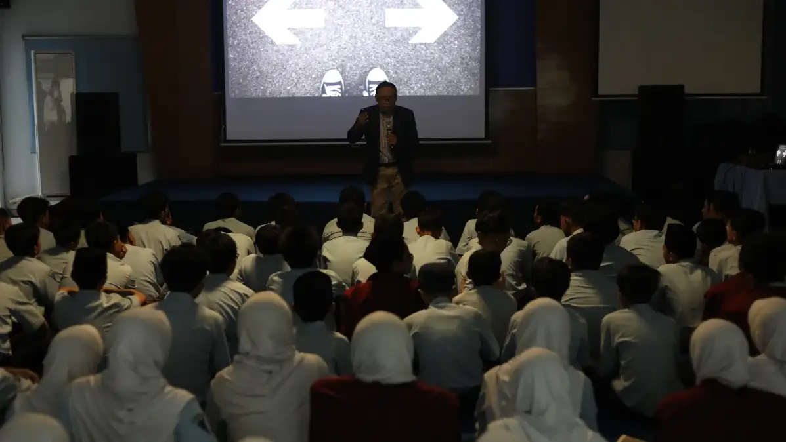

Kelas Inspirasi & Character Building
Program motivasi dan penguatan karakter untuk siswa dan mahasiswa dengan menghadirkan tokoh inspiratif, pemimpin, dan profesional berpengalaman agar peserta lebih percaya diri, visioner, dan siap menghadapi masa depan.

Program Kelas Inspirasi & Character Building
Kelas Inspirasi & Character Building adalah program yang dirancang untuk menanamkan semangat, nilai kepemimpinan, motivasi, dan karakter positif kepada siswa maupun mahasiswa. Program ini menghadirkan pembicara inspiratif dari berbagai latar belakang — mulai dari kepala daerah, pimpinan instansi, pengusaha, hingga profesional yang telah berhasil di bidangnya [file:2].
Tujuan utama program ini adalah membantu peserta memiliki cara pandang yang lebih luas tentang masa depan, membangun mental bertumbuh, menumbuhkan rasa percaya diri, serta memperkuat karakter yang dibutuhkan dalam pendidikan, organisasi, dan dunia kerja.
Bagi sekolah dan kampus, kegiatan ini juga menjadi sarana memperkuat citra institusi sebagai lembaga yang peduli terhadap pembinaan karakter, motivasi, dan kesiapan generasi muda. Jika diperlukan, kegiatan dapat dipublikasikan melalui media cetak dan digital Jawa Pos Radar Kediri untuk memperluas dampak dan eksposur positif institusi [file:2].
Apa yang Akan Didapat Peserta?
- Motivasi belajar dan semangat meraih masa depan yang lebih kuat
- Pembentukan karakter positif seperti disiplin, tanggung jawab, dan integritas
- Inspirasi langsung dari tokoh sukses dan praktisi berpengalaman
- Penanaman nilai kepemimpinan, keberanian, dan kerja sama
- Peningkatan rasa percaya diri untuk berbicara, tampil, dan berkembang
- Wawasan karier, masa depan pendidikan, dan pilihan hidup yang lebih terarah
- Publikasi kegiatan untuk memperkuat reputasi sekolah atau kampus
Susunan Acara (tentatif)
Registrasi Peserta
Peserta memasuki venue dan persiapan kegiatan
Pembukaan Acara
MC membuka acara, doa bersama, dan sambutan institusi
Sesi 1: Kelas Inspirasi
Paparan pengalaman hidup, perjuangan, dan perjalanan sukses dari narasumber utama
Interaktif & Tanya Jawab
Peserta dapat berdialog langsung dengan pembicara
Coffee Break
—
Sesi 2: Character Building
Materi nilai karakter, kepemimpinan, mental growth, dan kerja sama
Refleksi & Komitmen Diri
Peserta membuat komitmen pribadi untuk pengembangan diri setelah kegiatan
Penutupan & Dokumentasi
Sesi foto bersama, penyerahan kenang-kenangan, dan dokumentasi media
Event Gallery
Dokumentasi Kelas Inspirasi & Character Building bersama Radar Kediri Institute — menghadirkan pembelajaran yang memotivasi, menyentuh, dan berdampak bagi generasi muda.
{kind=link}
{kind=link}
{kind=link}
Event Organizer

Divisi Marketing JPRK
Event Organizer Radar Kediri
Info lebih lengkap, silakan hubungi:
officialrkinstitute@gmail.com
+62 831-9800-2246
Venue Acara
Program dapat dilaksanakan di aula sekolah, kampus, gedung pertemuan, atau venue pilihan institusi sesuai konsep acara.
Aula Jawa Pos Radar Kediri

Aula Jawa Pos Radar Kediri dan venue mitra lainnya siap digunakan untuk kegiatan motivasi dan penguatan karakter dalam skala kecil maupun besar. Kami juga melayani pelaksanaan langsung di sekolah atau kampus agar kegiatan lebih fleksibel dan efisien.
Fasilitas Program
- Narasumber inspiratif sesuai tema acara
- MC dan moderator profesional
- Sound system dan multimedia pendukung
- Dokumentasi kegiatan
- Publikasi media jika diperlukan
- Konsep fleksibel sesuai tema institusi
Find Us Here
Click on the map to get detailed directions
Pertanyaan Sering Diajukan
Temukan jawaban atas pertanyaan umum seputar program Kelas Inspirasi & Character Building di Radar Kediri Institute.